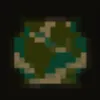

Official Cibles ServerCibles' Official Server. In order to be a part of the SMP you must be in this server, once you reach Lvl. 5, you can put your minecraft java/bedrock in #smp-usernames.

Community CiblesSMP ServerThe Community Server for the SMP. Joining is optional, but this server is a good place to communicate with fellow nations and SMP members.
CiblesSMP Rules
Last updated: 12/17/2024 | Z
Rules
1) No use of clients used strictly for hacking. (See Client Side Mod FAQ)
2) Certain client side mods meant to give you an advantage over other players are not allowed. (See Client Side Mod FAQ)
3) Speed or Fly hacks are not allowed. (See Client Side Mod FAQ)
4) No lag machines or purposefully creating lag.
5) Do not grief or steal from other individual's bases or homes without permission from said person.
6) Do not attempt to get around protected places in the world such as the shop or pvp area.
If someone is suspected of breaking any of the CiblesSMP Rules OR the Cibles Official Server rules within the Minecraft Server, please report it to an OFFICIAL MODERATOR.
Please Note: If you are banned in the Official Cibles Server, you will be banned from this server as well without warning. Please, do not get yourself banned.
Official SMP Administrators & Moderators (As of 12/17/2024):
Official Cibles Server Administrators & Moderators:
For official tickets for ban appeals, and the such, contact ModMail. Thank you for your adherance to these rules.
"Good Faith" Rules (Unofficial rules decided by the community)
Last updated: 12/17/2024 | Z
Rules
1) No griefing is allowed, some exclusions apply when a war has been started. However these will be stated.
2) You cannot live on a country's land without having citizenship. (PER COUNTRY BASIS)
3) You cannot start polls without permission by either a country's leader or unanimous agreement.
4) Entity cramming farms, lag machines and rapid chunk loading is not allowed, this causes lag.
5) Theft of anything is strictly prohibited, if you did not place it you cannot take it unless the person who placed it says otherwise.
6) Please unlock your chests if you're gonna be placing them in a public area. (As of recently, the mod allowing chests to be removed is no longer available, thus this rule is invalidated)
People breaking these rules will not recieve any OFFICIAL DISCINIPLARY ACTION, but instead will just be shunned by the community. (Unless it was also an official rule)
Client Side Mod FAQ
Last updated: 12/17/2024 | Z
Cibles Staff encourage the use of most client-side mods while maintaining a fair and enjoyable experience for all players. We operate on a common-sense policy: if your mod is designed for cheating, griefing, hacking, or spamming, it is disallowed. Previously, the rule was simply “any mod that gives you an advantage over other players is against the rules.” However, due to recent incidents, we are clarifying client-side mod restrictions. Mods that fall into the following disallowed categories, are primarily used for the the listed purpose, and have been used in such a manner will result in an immediate tempban or ban.
Disallowed Mod Categories
Cheat-Enabling Mods Mods that enable common cheats, including but not limited to flying, boat flying, potion spoofing, and extended reach mods.
Movement-Altering Mods Mods that modify player movement.
Exceptions:
Controller mods
Input lag fixers
Do A Barrel Roll (Elytra Mod)
Inventory-Altering Mods Mods that modify the contents of containers, inventories, or Ender Chests (your own or others).
Exceptions:
Mods that allow viewing (but not altering) of Ender Chest or Shulker Box contents, such as Shulker Tooltips
Teleportation or Speed Mods Mods that allow teleportation, traversal faster than normal gameplay, or unusual traversal methods.
Important Note: Some controller mods and input lag fixers may make your movement appear abnormal. Use these mods at your own risk and appeal any bans via ModMail.
Seed and Structure-Locating Mods Mods that allow players to see the server seed, locate structures based on the seed, or otherwise find structures faster than others.
Exceptions:
Minimap mods
Waypoint mods
Automation Mods Mods that automate commands, actions, mining, combat, or other game features.
Exceptions:
Macros
AutoClickers
X-Ray or Block-Locating Mods Mods that enable players to locate blocks through walls or use X-Ray-like features.
Exceptions:
Minimap mods
Camera-Altering Mods Mods that modify the player’s camera view to gain an advantage in combat.
Exceptions:
First-person Model
Minimap mods
Freecam (for cinematic purposes)
ReplayMod
Allowed Mods and Exceptions
These mods are permitted unless otherwise used for disallowed purposes:
Fullbright/Night Vision Mods (Cannot be a full potion-spoofing mod, only Night Vision)
Litematica (Schematic building mod)
ItemSwapper (For swapping hotbar items without opening inventory)
Most Resource Packs (X-Ray packs are disallowed)
Explicitly Banned Mods
These mods result in an instant ban with a low chance of appeal:
Meteor Client (and forks) including Baritone (and forks)
Wurst Client (and forks)
Impact Client (and forks)
LiquidBounce (and forks)
Aristois (and forks)
Sigma Client (and forks)
CheatUtils (and forks)
Ore Compass (and forks)
Important Notes
Mods not explicitly mentioned may still fall under disallowed categories. Use common sense and contact staff if unsure.
Appeals for bans caused by exceptions (e.g., controller mods causing unintended behavior), by unknowlingly having a mod (e.g., not knowing a mod had certain functionality), or by server staff error (e.g., a staff member false-reports you or sees something that looked like cheating but wasn't) can be made via ModMail.
This FAQ aims to create a balanced and enjoyable environment for all players on Cibles SMP. Please respect these guidelines and enjoy your time on the server!
The Community's Official Nations, Empires, and More
Last updated: 01/07/2025 | Z
Official NationsA nation is a area of land in which a small-large community of people are settled. It usually has a independent government unless it's a part of an empire.
Official Nations are nations that have met the requirements for official recognition and have signed up to be officially recognized. The leaders of these nations are included on the World Leaders team, which makes many decisions about the community.
NOTE: Empire leaders take priority over nation leaders, talk to empire leaders if you cannot get ahold of nation leaders.
Rewards Most Members, Yearly Nation Ranks, Yearly Holiday Participation, and Yearly Polls.
Land Ownership Usually the nation leader owns the land. This means that the land area can be controlled and modified by the nation leader, but the nation leader cannot mess with any builds made by other players without permission or they risk violating the rule against griefing.
üèÖ 2024BEST NATIONüèÖ 2024HALLOWEENüèÖ 2024CHRISTMASüèÖ 2024 Official Tour OrganizerüèÖ 2024 PrettiestüèÖ 2024 Most WelcomingüèÖ 2024 Most Well-OrganizedüèÖ 2024 Most UniqueüèÖ 2024 Best Leadership
EmpiresEmpires are alliances/groups of nations banded together. Usually empires have some kind of overall government and rule over many pieces of land. These can be established when at least one registered nation comes together with another nation or territory to form a central government.
Rewards Most Members, Yearly Empire Ranks, and Yearly Polls.
Land Ownership An Empire usually exerts some control of the land from the nations that are a part of it, but it is more up to the nation leaders to handle. An empire leader cannot directly modify another player's land without permission or they risk violating the rule against griefing.
Unofficial NationsA nation is a area of land in which a small-large community of people are settled. It usually has a independent government unless it's a part of an empire.
Unofficial Nations are nations that are on the server but are either not yet meeting official registration requirements or do not wish to officially register. These are shown here to still promote them, but will not be included in the World Leaders team or decisions made by the team.
Rewards Most Members, Yearly Unofficial Nation Ranks, Yearly Holiday Participation, and Yearly Polls.
Land Ownership Usually the nation leader owns the land. This means that the land area can be controlled and modified by the nation leader, but the nation leader cannot mess with any builds made by other players without permission or they risk violating the rule against griefing.
TerritoriesTerritories are areas of land that contain player-built structures or player-crafted natural landmarks that don't identify as a nation. These can include anything player-built and by default will be named "[player name]'s Territory".
Rewards Territories are not eligible for rewards
Land Ownership Territories are owned by whoever built the structures within them. They usually only contain structures from one person and are owned by that person. Of course, if another person modifies a player-built structure without permission, they risk violating the rule against griefing.
Map/list of dimensions or areas you claim to own as a country.
A person in power or a council of people in power
OPTIONAL REQUIREMENTS/PERKS
National Monument
Free Country Banners from The Crack Shack
How to Join a Nation
Different nations may ask for different things, but heres the basics;
You must notify a leader, or tell a person of power that you wish to join [Nation name here]. Depending on your history you may or may not be accepted. (most of the time you will be so don't worry) After that you should be enrolled for the nation, and you'll get a role change saying you are a citizen of [Nation name here].
Duel citizenship
To be a duel citizen you must have affiliations in both countries. Either you have a home in both that you actively use or you have certain things in one country but you have others in another. Both of the countries you wish to have citizenship have to be allied. In the event that allied countries you live in go to war, you may choose a side. It is entirely up to the nations if you are allowed back, or allowed to side with them.
Community War Guidelines
Last updated: 12/17/2024 | Z
You must meet the following criteria to declare (official) war:
All countries must now have at least 4 people
Each country must choose one item to represent their country (will be explained)
Each country must build a GREIFABLE structure in case of conflict, where they will store the item.
Declaring War
An aggressor must publicly announce a threat of war, the opposing party must have at least 1 person of power online. They can either agree to meet the terms, or resolve the conflict but if it is not resolved then any nations involved go to war. Inside the structures built by the nations there will be the country's chosen item. This item is to be kept in a claimed chest (chest claimed by a leader of that country) with public writing and editing on. That structure will be immune to anti-grieving laws once war starts, and the chest inside of it will be required to have writing perms. These perms will be applied to the public permissions, but stay locked so it's not blown up. Once this item is stolen the opposing country must store it in their own country item chest for 12 Hours in order to win. They must make a public announcement in the soon to be finished United Nations Discord server, the timer will be started once the announcement is released. BOTH PARTIES MUST BE PINGED. If the opposing country does not take their item back, they will be forced to surrender and they will lose the war. If it is smaller countries that war, the bigger countries have every right to support, or deny support to either side.
War Crimes
1) Killing pets, or named animals. This includes villagers, monsters, etc. only if named. (THIS IS AGAINST GRIEFING RULES, YOU WILL RECIEVE OFFICIAL CONSEQENCES)
2) Destruction of player builds, this does not include landscape or war structures. (THIS IS AGAINST GRIEFING RULES, YOU WILL RECIEVE OFFICIAL CONSEQENCES)
3) Use of withers in non-underground areas or around player builds is strictly prohibited. (THIS IS AGAINST GRIEFING RULES, YOU WILL RECIEVE OFFICIAL CONSEQENCES)
4) Bombing, stealing, threatening or damage of any kind to nations not involved. (THIS IS AGAINST GRIEFING RULES, YOU WILL RECIEVE OFFICIAL CONSEQENCES)
5) Attacking people/structures/mobs that are not included in the war, this includes:
Nations not participating
People refusing to participate
Uniformed World Post Employees
Crack Shack War Supply Providers
Community World Leaders Meeting Rules
Last updated: 12/17/2024 | Z
1) Each country must have 1-3 human delegates.
2) Each country must wear a full leather armor uniform designed for each delegate.
3) No items will be allowed whatsoever, please eat before you enter includes weapons. You will be provided a chest to place them in.
4) If you attend you cannot be afk (For a long period of time), excuse yourself if needed.
5) Please remain seated in your color coordinated spots unless excused.
6) The meeting room is a peaceful place, any violence inside will result in your country being excluded.
7) In case of emergency we ask that you simply use /home instead of using violence or threats.